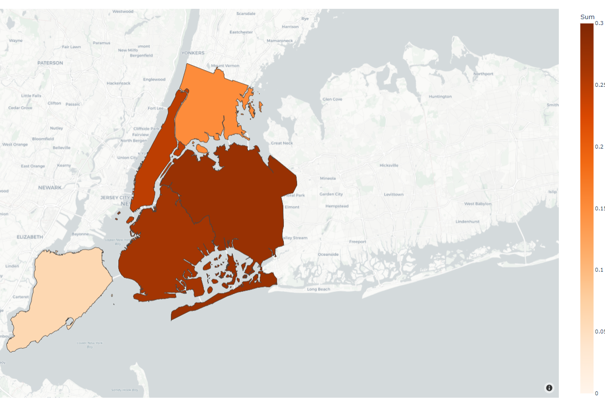

Initial Objective
The initial objective was to bring awareness to mental health issues in the United States. I wanted to bring attention to this topic as COVID-19 could have drastically affected people's mental health.
This topic has significance to me because as a young adult adapting to the struggles of entering the "real world." Mental health issues seem to be a common occurrence among people around my age group. Thus I wanted to analyze the effects of COVID-19 on suicide rates.
Issues
However, as I was searching for my data, I realized that it was difficult to find data relating to suicides. From my searching, I was unable to find data for post-2020 and even less data for data restricted to new York.
The dataset that I gathered from the WHO, mentions that globally the availability and quality of data is poor. The reason for this is because "the sensitivity of suicide and the illegality of suicidal behavior in some countries it is likely that under-reporting and misclassification are greater problems for suicide than for most other causes of death."
Thus I had to shift my topic to be suicide rates in the United States before 2019. However, I managed to find some statistical documents on various websites, as well as CSVs from the World Health Organization. Thankfully, after more research, I was able to find a dataset that provided suicide rates by boroughs at different Hospitals. Although this data might not be perfect, it does display data that is useful. However, But a lot of this data was unformatted or had unnecessary amounts data.
Data Cleaning
As most of this data was not in a spreadsheet format, I had to clean my data by copying the data into a google doc and then using a document to CSV converter by spaces.
In addition, there were many irrelevant data points in the spreadsheet thus I had to drop irrelevant columns to my objective. This can be done with simple pandas or manually by deleting data from the spreadsheet
Visualizations
The image above shows the collective suicide rate of both men and females between the years 2000 and 2019.
As we can see the data above shows that there has been an increasing amount of suicides throughout the years.
Although the data shows this, as stated prviously, this data may be inaccurate as there are many issues concerning data relating to the suicides throughout the united states.
Now I will split the data into the two sexes, Male and Female. The graph displays the suicide rate for each gender per 100k people. From this, we can see that the female suicide rate is drastically lower than the male suicide rate. The males range from ~15 to ~22.5, while the females range from ~5 to ~10. From this, we can see that the male suicide rate is generally two times higher than the female suicide rate.
In this graph, I split the data by age groups. Then made a comparison using a bar graph. From this, we can see that From this, we can see that the lowest suicide rates come from people ages 15-24 and that the highest suicide rates come from people ages 25-34.
Map Visualization
The image above is a choropleth map that was based on a suicide count by a United Hospital Fund separated by Borough. This map displays data from 2015-to 2019. From this map, it is clear that the highest suicide rates come from Queens and Brooklyn. Although the map says this, there could be an inaccurate model. As stated before that is very little data on suicide and the numbers given in the data could be under report or arbitrary numbers.